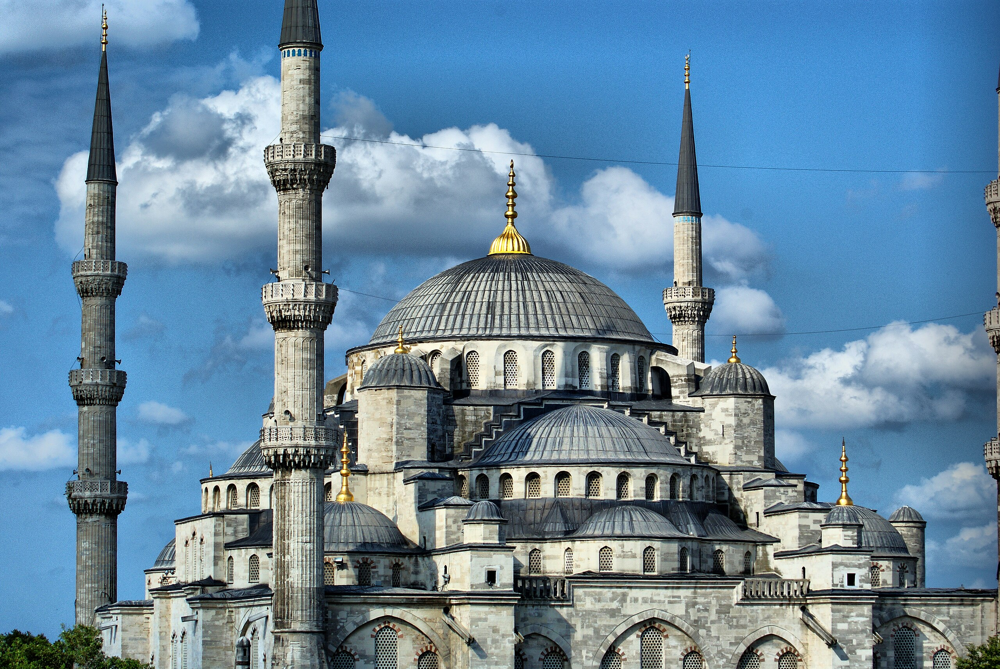

Blue Mosque

Gracing the skyline of Istanbul with celestial elegance, the Blue Mosque, officially known as the Sultanahmet Camii, stands as a testament to the Ottoman Empire's architectural prowess and cultural richness. Commissioned by Sultan Ahmet I in the early 17th century, this monumental masterpiece is more than just a place of worship; it is a symbol of Istanbul's spiritual devotion and artistic zenith.
The mosque's nickname, the Blue Mosque, stems from the breathtaking array of more than 20,000 handcrafted blue tiles that adorn its interior, creating a mesmerizing sea of color. As visitors approach the grand entrance, the six towering minarets and cascading domes come into view, setting the stage for a sensory journey into Ottoman grandeur.
Stepping into the vast prayer hall is a transformative experience. The interplay of light through the stained glass windows and the intricate calligraphy that adorns the walls creates an atmosphere of divine tranquility. The central dome, supported by four colossal pillars, serves as a celestial canopy, while the spacious courtyard, with its ablution fountains and meticulously landscaped gardens, offers a serene oasis in the heart of the bustling city.
Beyond its architectural magnificence, the Blue Mosque is a living museum of Ottoman artistry. The elaborate ceramic tiles, floral motifs, and geometric patterns that embellish the interior walls showcase the pinnacle of Islamic decorative arts. The mosque's cultural significance extends beyond its religious role, making it a symbol of harmony between artistic expression and spiritual devotion.
In conclusion, the Blue Mosque is not merely a structure of stone and tile; it is a living testament to the cultural and architectural zenith of the Ottoman Empire. As you stand beneath its domes, surrounded by the harmonious blend of colors and patterns, you can't help but be transported to an era where art and spirituality converged to create an enduring symbol of Istanbul's rich heritage.